정보통신기사(구) (2017-03-05 기출문제)
1과목: 디지털 전자회로
1. 전원 주파수 60[Hz]를 사용하는 정류회로에서 120[Hz]의 맥동 주파수를 나타내는 정류방식은?
- 단상 반파 정류
- 단상 전파 정류
- 3상 반파 정류
- 3상 전파 정류
(정답률: 82%)

2. 다음과 같은 정전압 회로에서 입력전압 Vin이 15[V]~18[V]의 범위로 변동하는 경우 제너다이오드 전류 lD의 변화는 얼마인가? (단, RL=1[KΩ], VL=10[V]이다.)
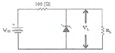
- 20~50[mA]
- 30~60[mA]
- 40~60[mA]
- 40~70[mA]
(정답률: 56%)
3. 다음 중 공통 이미터(CE) 증폭기회로에 대한 설명으로 옳은 것은?
- 출력신호는 입력신호와 위상이 같다.
- 출력신호는 입력신호와 위상이 다르다.
- 출력신호는 입력신호에 비해 작다.
- 출력신호는 입력신호와 크기가 같다.
(정답률: 65%)
4. 그림과 같은 부궤환 증폭기의 폐루프(Closed-Loop) 차단주파수는? [단, 개루프(Open Loop)일 때, 이득-대역폭 곱은 1×106[Hz]이다.]
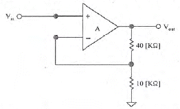
- 200[kHz]
- 100[kHz]
- 50[kHz]
- 10[kHz]
(정답률: 55%)
5. 다음 중 차동증폭기의 동상신호제거비(Common-Mode Rejection Ratio)에 대한 설명으로 틀린 것은?
- 동상신호제거비가 작을수록 간섭신호 제거 특성이 좋다.
- 개루프 전압이득이 100,000이고 공통-모드 이득이 0.2인 연산증폭기의 공통신호제거비는 500,000이다.)
- 동상신호제거비는 동상신호를 제거할 수 있는 성능척도이다.
- 입력 동상신호에 대한 오차를 나타내는 성능척도이다.
(정답률: 62%)
6. 다음 중 푸시 풀(Push-Pull)증폭기에서 출력파형의 찌그러짐이 작아지는 이유는?
- 기수고조파가 상쇄되기 때문이다.
- 우수고조파가 상쇄되기 때문이다.
- 기수차 및 우수파 고조파가 상쇄되기 때문이다.
- 직류성분이 없어지기 때문이다.
(정답률: 71%)
7. 발진회로에서 발진을 지속하기 위해 필요한 과정은?
- 출력신호의 일부분을 부궤환시킨다.
- 출력신호의 일부분을 정궤환시킨다.
- 외부로부터 지속적으로 전원과 입력신호를 제공한다.
- L과 C성분을 제거한다.
(정답률: 75%)
8. 하틀리 발진회로에서 커패시턴스 C=200[pF], 인덕턴스 L1=180[μF], L2=20[μF] 및 상호인덕턴스 M=90[μF]의 값을 가질 때 발진주파수는 약 얼마인가?
- 517[kHz]
- 537[kHz]
- 557[kHz]
- 577[kHz]
(정답률: 56%)
9. 다음 중 주파수변조(FM)에서 신호대 잡음비(S/N)를 개선하기 위한 방법으로 틀린 것은?
- 디엠파시스(De-Emphasis) 회로를 사용한다.
- 잡음지수가 낮은 부품을 사용한다.
- 변조지수를 크게 한다.
- 증폭도를 크게 높인다.
(정답률: 71%)
10. 다음 중 FM에 대한 특징으로 틀린 것은?
- 단파 대역에 적당하지 않다.
- 수신의 충실도를 향상 시킬 수 있다.
- 잡음을 보다 감소시킬 수 있다.
- 피변조파의 점유주파수대역이 좁아진다.
(정답률: 71%)
11. QAM 변조방식은 디지털 신호의 전송 효율향상, 대역폭의 효율적 이용, 낮은 에러율, 복조의 용이성을 위해 어떤 변조 방식을 결합한 것인가?
- FSK+PSK
- ASK+PSK
- ASK+FSK
- QPSK+FSK
(정답률: 77%)
12. 정보 전송에서 800[Baud]의 변조 속도로 4상 위상 변조된 데이터 신호 속도는 얼마인가?
- 600[bps]
- 1,200[bps]
- 1,600[bps]
- 3,200[bps]
(정답률: 69%)
13. 다음 중 높은 주파수 성분에 공진하기 때문에 생기는 펄스 상승부분의 진동 정도를 무엇이라 하는가?
- 새그(Sag)
- 링깅(Ringing)
- 언더슈트(Undershoot)
- 오버슈트(Overshoot)
(정답률: 77%)
14. 멀티바이브레이터의 단안정, 무안정, 쌍안정의 동작은 어떻게 결정 되는가?
- 전원 전압의 크기
- 바이어스 전압의 크기
- 전원 전류의 크기
- 결합 회로의 구성
(정답률: 70%)
15. 숫자 0에서 9까지를 나타내기 위해 BCD 코드는 몇 비트가 필요한가?
- 4
- 3
- 2
- 1
(정답률: 82%)
16. 다음 중 드모르간(De Morgan)의 정리를 옳게 나타낸 것은?
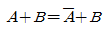
- A+B=AㆍB
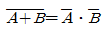
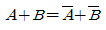
(정답률: 82%)
17. 다음 중 Master-Slave 플립플롭은 어떤 현상을 해결하기 위해 사용되는가?
- Race 현상
- Toggle 현상
- 펄스 지연 현상
- 반전 현상
(정답률: 80%)
18. 다음 중 동기식 카운터와 비동기식 카운터를 설명한 것으로 옳은 것은?
- 동기식 카운터를 직렬형, 비동기식 카운터를 병렬형 카운터라고도 한다.
- 같은 수의 플립플롭을 갖는 비동기식 카운터보다 동기식 카운터가 더 높은 입력 주파수를 사용하는 곳에 이용된다.
- 비동기식 카운터는 동기식 카운터와는 달리 시간 지연이 누적되지 않는다.
- 비동기식 카운터는 동기식 카운터보다 더 많은 회로 소자가 필요하다.
(정답률: 57%)
19. 다음 중 디코더(Decoder)에 대한 설명으로 틀린 것은?
- 출력보다 많은 입력을 갖고 있다.
- 한번에 하나의 동작을 수행한다.
- N 비트의 2진 코드 입력에 의해 최대 2N개의 출력이 나온다.
- 인코더(Encoder)의 역기능을 수행한다.
(정답률: 73%)
20. 다음 중 전가산기(Full Adder)의 구성으로 옳은 것은?
- 1개의 반가산기와 1개의 OR게이트
- 1개의 반가산기와 1개의 AND게이트
- 2개의 반가산기와 1개의 OR게이트
- 2개의 반가산기와 1개의 AND게이트
(정답률: 74%)
2과목: 정보통신 시스템
21. 정보통신시스템의 기본 구성에서 데이터전송계에 속하지 않는 것은?
- 중앙처리장치
- 전송회선
- 단말장치
- 통신제어장치
(정답률: 78%)
22. 다음의 정보통신망 구성 요소 중 일반전화기는 어디에 속하는가?
- 단말장치
- 교환장치
- 전송장치
- 중계장치
(정답률: 89%)
23. 다음 중 NFC(Neer Field Communication)의 설명으로 틀린 것은?
- 13.56[MHz] 주파수 대역을 사용한다.
- 전송거리가 10[cm] 이내이다.
- Bluetooth에 비해 통신설정 시간이 길다.
- P2P(Peer to Peer)기능이 가능하다.
(정답률: 83%)
24. 다음은 정보통신용어를 해설한 것이다. 괄호 안에 들어갈 알맞은 것은?
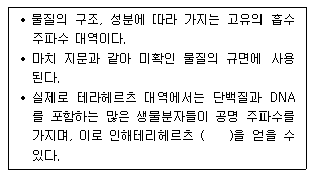
- 지문 스펙트럼
- 멀티 스펙트럼
- 흡수 스펙트럼
- 싱글 스펙트럼
(정답률: 86%)
25. 데이터링크 계층의 프로토콜 비트 중심의 프로토콜이 아닌 것은?
- SDLC
- X.25
- HDLC
- PPP
(정답률: 75%)
26. 다음 중 BSC 프로토콜에서 사용되지 않는 방식은?
- 루프(Loop) 방식
- 반이중(Half Duplex) 방식
- 포인트 투 포인트(point-to Point) 방식
- 셀렉션(Selection) 방식
(정답률: 67%)
27. 정보통신 표준화 분야에서 핵심적인 역할을 수행하고 있는 국제 표준화 단체가 아닌 것은?
- IAU
- IEC
- ANSI
- TTA
(정답률: 56%)
28. 다음 중 TCP/IP 프로토콜에 관한 설명으로 거리가 먼 것은?
- TCP/IP는 De jure(법률) 표준이다.
- IP는 ARP, RARP, ICMP, IGMP를 포함한다
- 인터넷에서 사용하는 프로토콜이다.
- TCP는 신뢰성 있는 스트림 전송 포트 대 포트 프로토콜이다.
(정답률: 82%)
29. 전화통신망(PSTN)에서 최번 시 1시간에 발생한 호(call) 수가 120이고, 평균통화시간이 3분일 때 이 회선의 호량(Erlang)은?
- 0.1[Erl]
- 6[Erl]
- 40[Erl]
- 360[Erl]
(정답률: 88%)
30. 다음 중 ATM셀 헤더를 구성하는 필드(field)에 대한 설명으로 틀린 것은?
- PT : 페이로드에 실린 정보의 종류를 표시한다.
- VPI : 셀이 속한 가상경로를 식별하기 위해 사용한다.
- CLP : 망 폭주시 셀이 폐기될 우선순위를 나타낸다.
- HEC : 헤더 자체오류 유무를 검사하기 위한 것으로 해민코드(Hamming Code)를 사용한다.
(정답률: 65%)
31. 다음 중 xDSL회선의 변복조 방식인 CAP(Carrier-less Amplitude/Phase)와 DMT(Discrete Multi-Tone)의 주파수 배치표로 옳은 것은?
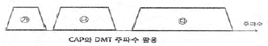
- CAP방식 : ㉮음성전화(POTS), ㉯역방향(Upstream), ㉰순방향(Downstream)
- CAP방식 : ㉮순방향(Downstream), ㉯역방향(Upstream), ㉰음성전화(POTS)
- DMT방식 : ㉮순방향(Downstream), ㉯역방향(Upstream), ㉰음성전화(POTS)
- DMT방식 : ㉮음성전화(POTS), ㉯순방향(Downstream), ㉰역방향(Upstream)
(정답률: 82%)
32. 인터넷 통신망에서 가입자가 요구하는 서비스품질을 만족시키기 위하여 가입자의 입력 트래픽을 특성에 의해 몇 개의 클래스로 그룹화하여 클래스 기반으로 서비스하는 방식은 무엇인가?
- DiffServ 방식
- Intserv 방식
- Flow-based 방식
- RSVP 방식
(정답률: 73%)
33. 무선통신 수신기의 S/N비를 향상시키기 위한 방법으로 옳지 않은 것은?
- 중간 주파 증폭부의 증폭도를 적게 한다.
- 안테나의 이득을 높인다.
- 주파수 변환부의 이득을 증가시킨다.
- 수신 감도를 향상시키고, 저잡음 소자를 사용한다.
(정답률: 77%)
34. 근거리 무선통신 규격 중 반경 10~100[m] 안에서 컴퓨터, 프린터, 휴대폰, PDA 등 정보통신 기기는 물론 각종 디지털 가전 제품간의 통신에 물리적인 케이블 없이 무선으로 고속의 데이터를 주고 받을 수 있는 기술은 무엇인가?
- Zigbee
- Bluetooth
- UWB
- Home RF
(정답률: 81%)
35. 20개의 전화국 간을 메쉬(Mesh)형으로 연결하려면 필요한 회선 수는?
- 190개
- 200개
- 260개
- 380개
(정답률: 88%)
36. 정보통신시스템 운용 중 장애 발생 시 대응절차로 적합하게 나열한 것은?
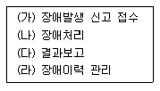
- (가)-(나)-(다)-(라)
- (가)-(다)-(나)-(라)
- (나)-(다)-(가)-(라)
- (나)-(가)-(라)-(다
(정답률: 90%)
37. IPv4 주소체계는 Class A, B, C, D, E로 구분하여 사용하고 있으며 Class C는 가장 소규모의 호스트를 수용할 수 있다. Class C가 수용할 수 있는 호스트 개수로 가장 적합 한 것은?
- 1개
- 254개
- 1,024개
- 65,536개
(정답률: 86%)
38. 어떤 시스템에서 신뢰도를 높이기 위해 중복시스템을 채용하고 있다. 이 시스템에서 유니트 1 또는 3 이 고장을 일으키면 자동적으로 유니트 2 또는 4로 바뀐다. 유니트 1, 2, 3, 4의 신뢰도를 각각 [0.8],[0.8][0.9],[0.9]라 할 때 이 시스템의 신뢰도는 얼마인가?
- 0.9684
- 0.9504
- 0.5184
- 0.0684
(정답률: 70%)
39. 전보통신시스템에서 신뢰성의 척도로 가동률을 사용하고 있다. MTBF=22시간, MTTR=2시간일 때 가동률은 얼마인가? (단, 소수점 3번째 자리에사 반올림 한다.)
- 0.98
- 0.96
- 0.94
- 0.92
(정답률: 80%)
40. 대칭키 암호화 방식인 왈쉬코드를 이용하여 암호화와 복호화를 수향하려 한다. 아래와 같은 조건일 때 수신측에는 어떤 데이터가 추출되는가?
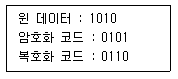
- 1111
- 1001
- 0110
- 0000
(정답률: 75%)
3과목: 정보통신 기기
41. 단말기에 마이크로프로세서를 내장하여 분산처리방식에 적절한 단말장치는?
- 전용단말장치
- 지능형단말장치
- 복합단말장치
- 범용단말장치
(정답률: 77%)
42. 다음 중 블루투스에 대한 설명으로 가장 거리가 먼 것은?
- 2.4[GHz] 주파수 대역폭을 사용한다.
- 저가격, 저전력 무선 구현을 지원한다.
- 블루투스 규격은 크게 코어규격과 프로파일 규격으로 구분한다.
- 주변조 방식은 PSK이다.
(정답률: 81%)
43. 정보 단말기의 구성 중 전송제어장치에 해당되지 않는 것은?
- 입출력제어부
- 회선제어부
- 회선접속부
- 출력장치부
(정답률: 70%)
44. 4-PSK 변조방식에서 변조속도가 1,200[baud]일 때 데이터 전송속도는 몇 [bps]인가?
- 1,200[bps]
- 2,400[bps]
- 3,600[bps]
- 4,800[bps]
(정답률: 80%)
45. 다음 중 xDSL에 대한 설명으로 잘못된 것은?
- 음성신호와 데이터 신호를 동시 전송하기 위해 송ㆍ수신 속도를 같게 한다.
- 전화국과의 거리가 가까울수록 속도를 빠르게 할 수 있다.
- ADSL, HDSL, SDSL, VDSL 등이 있다.
- 기존의 전화회선을 이용하면서 주파수 대역폭이 넓은 범위를 사용하는 방식이다.
(정답률: 68%)
46. 다음 중 다중화 방식의 특징에 관한 설명으로 옳지 않은 것은?
- 통신회선의 유지보수가 용이하다.
- 회선 사용에 있어서 경제적이다.
- 통신선로의 설치 공사비가 절감된다.
- 신호처리가 단순해진다.
(정답률: 82%)
47. LAN 엑세스 제어방법에서 통신회선에 대한 제어신호가 논리적으로 형성된 공통선상에서 번호를 할당함에 따라 각 노드간을 옮겨가면서 데이터를 전송하는 방식은?
- CSMA/CD
- 토큰버스
- 토큰 링
- FDDI
(정답률: 68%)
48. 다음 중 독립적으로 MAN이나 WAN을 구성하기에 부적절한 장비는?
- 이동전화시스템
- 교환기
- 인공위성
- Hub
(정답률: 77%)
49. 다음 중 영상통신기기의 “보안”사항으로 관련이 없는 것은?
- 무결성(Integrity)
- 인증(Authenticity)
- 암호화(Encryption)
- 품질(Quality)
(정답률: 88%)
50. 화상회의의 오디오 압축방식으로 300~3,400[Hz]의 대역폭을 가진 채널 상에서 16, 24, 32, 40[kbps] ADPCM을 지원하는 표준은?
- G.721
- G.722
- G.724
- G.726
(정답률: 58%)
51. 다음 중 영상회의 시스템에 대한 설명으로 틀린 것은?
- 시간과 경비가 절약된다.
- 회의 참석이 용이하다.
- 신속하고 정확한 정보 전달이 어렵다.
- 고속 및 광대역의 네트워크가 필요하다.
(정답률: 90%)
52. 다음 중 CCTV의 사용 범위에 해당하지 않은 것은?
- 의학용
- 상업용
- 우주 관측용
- 특수 신호용
(정답률: 69%)
53. 다음 중 CATV망 구성으로 적합하지 않은 것은?
- Star형
- Mesh형
- Tree and Branch형
- Switch Star형
(정답률: 74%)
54. 무선송신기에서 주파수 체배기가 사용되는 목적은?
- 수정발진자의 주파수보다 더 낮은 주파수를 얻기 위해
- 수정발진자의 주파수보다 더 높은 주파수를 얻기 위해
- 수정발진자의 주파수 허용편차를 개선하기 위해
- 수정발진자의 주파수를 정수배 감소시키기 위해
(정답률: 77%)
55. 다음 안테나 중 위성통신용 안테나로 주로 사용되고, 주반사기의 초점과 부반사기의 허 초점을 일치시킨 형태의 안테나는?
- 롬빅 안테나
- 파라볼릭 안테나
- 카세그레인 안테나
- 혼 리틀렉터 안테나
(정답률: 71%)
56. 셀룰러 이동통신 방식에서 기지국 서비스 영역을 확대하는 방법이 아닌 것은?
- 고이득 지향성 안테나를 사용한다.
- 수신기의 수신 한계레벨을 높게 조정한다.
- 다이버시티 수신기를 사용한다.
- 기지국 안테나 높이를 증가시킨다.
(정답률: 66%)
57. 다음 중 양안시차, 폭주(Vergence)를 이용하는 방식의 TV는?
- HDTV
- SDTV
- 3DTV
- IPTV
(정답률: 88%)
58. 멀티미디어 데이터 압축기법 중 손실 압축 기법으로 틀린 것은?
- FFT(Fast Fourier Transform)
- DCT(Discrete Cosine Transform)
- DPCM(Differential Pulse Code Modulation)
- Huffman Code
(정답률: 77%)
59. 멀티미디어 서비스 활성화를 위한 CPND 4가지 측면의 생태계 조성이 필수적이다. 다음 중 CPND의 의미로 틀린 것은?
- C: Contentd(콘텐츠)
- P: Platform(플랫폼)
- N: Network(네트워크)
- D: Digital(디지털)
(정답률: 86%)
60. 다음 중 멀티미디어 기기의 압축에 사용되는 방식이 아닌 것은?
- MPEG-1
- MPEG-2
- MPEG-4
- MPEG-21
(정답률: 83%)
4과목: 정보전송 공학
61. 다음 중 PCM 통신에서 양자화 잡음의 설명으로 적합하지 않은 것은?
- 진폭 값을 디지털 신호로 변환시키는 과정에서 생기는 잡음이다.
- 진폭 값이 양자화 기준 값을 초과하게 된 경우 생기는 잡음이다.
- 양자화 잡음의 크기는 양자화 잡음의 평균전력으로 표현한다.
- 입력 진폭이 작을 때 신호 대 양자화 잡음비가 크게 나빠진다.
(정답률: 49%)
62. 8진 PSK 신호에 5,000[Hz]의 대역폭이 주어졌을 때 보오율(baud rate)과 비트율(bit rate)은 각각 얼마인가?
- 보오율: 5,000[baud/s], 비트율: 15,000[bps]
- 보오율: 5,000[baud/s], 비트율: 20,000[bps]
- 보오율: 10,000[baud/s], 비트율: 15,000[bps]
- 보오율: 10,000[baud/s], 비트율: 20,000[bps]
(정답률: 78%)
63. 다음 중 PSK에 대한 설명으로 알맞지 않은 것은?
- 피변조파는 정포락선을 갖는다.
- BPSK와 QPSK의 오류확률 성능은 같다.
- 전송로 등에 의한 레벨변동이 적다.
- BPSK의 반송파 전력은 QPSK 반송파 전력의 1/4배이다.
(정답률: 67%)
64. 국내에서 상용화된 WiBro의 다중 전송방식 및 송신/수신 Duplex방식은?
- OFDM/TDD
- CDMA/FDD
- OFDM/FDD
- TDMA/ODD
(정답률: 67%)
65. 전송선로의 2차 정수 α와 β는 고주파에서 어떤 특성을 나타내는가?
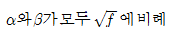
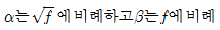
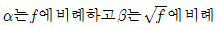
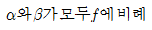
(정답률: 75%)
66. 구내통신선로설비란 통신가업자설비와 건물 내의 가입자 단말기 간을 접속하여 통신서비스가 가능케 하는 건물 내 정보통신 기반시설을 말한다. 다음 중 이러한 구내통신선로 기술기준에 대한 국제표준은 어느 것인가?
- ISO/IEC 96000
- ISO/IEC 29103
- ISO/IEC 11801
- ISO 20022
(정답률: 61%)
67. 동축케이블간에는 근단누화와 원단누화가 발생할 수 있다. 반송주파수만을 사용하는 시외전화선의 길이가 무한히 길어진다고 가정했을 때 이들간의 관계가 맞는 것은?
- 근단누화 < 원단누화
- 근단누화 > 원단누화
- 근단누화 = 원단누화
- 상황에 따라서 근단누화가 크거나 원단누화가 크다.
(정답률: 72%)
68. 동축 케이블의 설계는 RG(Radio Guide) 등급에 의해 분류되는데, 각각의 카테고리, 특성임피던스, 사용용도의 순서로 틀린 것은?
- RG-59, 75[Ω], 케이블TV
- RG-58, 75[Ω], 10Base5 또는 Thick Ethernet
- RG-11, 75[Ω], 10Base5 또는 Thick Ethernet
- RG-58, 50[Ω], 10Base2 또는 Thin Ethernet
(정답률: 70%)
69. 다음 중 전파통신이 가능한 가시거리(Line-of-Sight)를 구하는 공식은? (단, d는 가시거리, K는 지구의 곡률에 의한 보정 계수, H는 안테나의 높이[m])
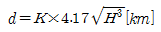
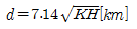
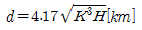
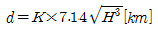
(정답률: 71%)
70. 다음 중 비동기식 3G 이동통신 WCDMA와 WLAB 등과 같이 상이한 이동망간에 이루어지는 Hand over 방식은?
- Horizontal Hand over
- Vertical Hand over
- Hierarchical Hand over
- Roaming Hand over
(정답률: 66%)
71. 다음 중 레이더 또는 위성통신에 이용되며, Ka밴드, K밴드, Ku밴드, X밴드, L밴드 등 특수한 용어를 사용하여 밴드를 분류하는 파는 무엇인가?
- 단파
- 마이크로파
- 밀리미터파
- 초단파
(정답률: 82%)
72. 다음 중 WiBro의 기술 규격 표준화 단체는?
- IEEE
- ISO
- ETSI
- 3GPP
(정답률: 81%)
73. 100[mV]는 몇 [dBmV]인가? (단, 1[mV]는 0[dBmV]이다.)
- 10[dBmV]
- 20[dBmV]
- 30[dBmV]
- 40[dBmV]
(정답률: 66%)
74. 네트워크의 공간적인 거리에 따른 구분에 적합하지 않는 것은?
- LAN
- MAN
- WAN
- PDN
(정답률: 87%)
75. 다음 중 IP의 특성이 아닌 것은?
- 비접속형
- 신뢰성
- 주소 지정
- 경로 설정
(정답률: 80%)
76. 다음 중 TCP/IP 프로토콜 스택(구조)의 Internetwork layer에서 사용되는 프로토콜이 아닌 것은?
- IP
- ARP
- ICMP
- UDP
(정답률: 69%)
77. 다음 문장의 괄호 안에 들어갈 알맞은 용어는?
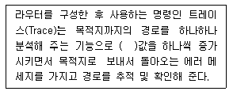
- TTL(Time To Live)
- Metric
- Hold time
- Hop
(정답률: 75%)
78. 다음 중 동일한 데이터를 2회 송출하여 수신 측에서 이 2개의 데이터를 비교 체크함으로써 에러를 검출하는 에러 제어 방식은?
- 반송제어 방식
- 연속송출 방식
- 캐릭터 패리티 검사 방식
- 사이클릭 부호 방식
(정답률: 78%)
79. 전송하려는 부호어들의 최소 해밍거리가 6일 때 수신 시 정정할 수 있는 최대 오류의 수는?
- 1
- 2
- 3
- 6
(정답률: 69%)
80. 다음 중 네트워크 계층의 핵심적인 프로토콜로 상위계층으로부터 메세지를 받아 이를 패킷형태로 전송하는 프로토콜은?
- IP(Internet Protocol)
- UDP(User Datagram Protocol)
- ICMP(Internet Control Message Protocol)
- ARP(Address Resolution Protocol)
(정답률: 65%)
5과목: 전자계산기일반 및 정보통신설비기준
81. 다음 중 누산기(Accumulator)에 대한 설명으로 옳은 것은?
- 연산장치에 있는 레지스터의 하나로서 연산 결과를 기억하는 장치이다.
- 기억장치 주변에 있는 회로인데 가감승제 계산 논리 연산을 행하는 장치이다.
- 일정한 입력 숫자들을 더하여 그 누계를 항상 보존하는 장치이다.
- 정밀 계산을 위해 특별히 만들어 두어 유효 숫자 개수를 늘리기 위한 것이다.
(정답률: 74%)
82. 다음 중 병렬 입출력 방식(Parallel Input Output)에 대한 설명이 아닌 것은?
- 입ㆍ출력 제어장치와 입ㆍ출력 장치 사이에 데이터를 1~N 바이트(byte)씩 병렬로 전송하는 방식이다.
- 고속 데이터 전송에 적합하다.
- 단거리 전송에 이용된다.
- 데이터의 각 byte의 시작과 끝을 인식하도록 시작과 정지 비트를 사용한다.
(정답률: 59%)
83. 8비트로 된 레지스터에서 첫째 비트는 부호비트로 0, 1로 양, 음을 나타낸다고 할 때 2의 보수(2‘s Complement)로 숫자를 표시한다면 이 레지스터로 표현할 수 있는 10진수의 범위로 올바른 것은?
- -256 ~ +256
- -128 ~ +127
- -128 ~ +128
- -256 ~ +127
(정답률: 84%)
84. 두 이진수 01101101 과 11100110 을 연산하여 결과가 10011011 이 나왔다. 다음의 어떤 연산을 한 것인가?
- AND 연산
- OR 연산
- XOR 연산
- NAND 연산
(정답률: 66%)
85. 다음 지문에서 설명하는 운영체제의 유형은?
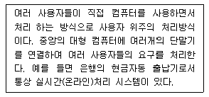
- 시분할 시스템(Time-Sharing System)
- 다중 처리(Multi-Processing)
- 대화 처리(Interactiive Processing)
- 분산 시스템(Distributed System)
(정답률: 60%)
86. 다음 중 운영체제에 대한 특징으로 틀린 것은?
- 유닉스(Unix) : 네트워크 기능이 강력하며, 다중 사용자 지원이 가능하고, PC에서도 설치 및 운용이 가능한 버전이 있다.
- 리눅스(Linux) : 무료로 다운받아 모든 분야에 무료로 널리 사용할 수 있으며, 윈도우즈와 동일한 환경을 제공한다.
- 윈도우즈(Windows) : 소스가 공개되어 있지 않으며, 많은 사용자들이 보편적으로 사용하고 있다. 서버급 보다는 클라이언트 용으로 주로 사용되고 있다.
- 도스(DOS) : 명령어 입력방식으로 불편하녀, DOS지원을 위해 메모리와 디스크의 용량에 한계가 있다. 여러 사람이 작업을 할 수 없다.
(정답률: 82%)
87. 다음 중 C언어의 특징으로 틀린 것은?
- C언어 자체는 입ㆍ출력 기능이 없다.
- C언어는 포인터의 주소를 계산할 수 있다.
- C언어는 연산자가 풍부하지 못하다.
- 데이터에는 반드시 형(type) 선언을 해야 한다.
(정답률: 78%)
88. 다음 중 시스템 소프트웨어에 대한 설명으로 틀린 것은?
- 시스템 소프트웨어와 응용 소프트웨어로 구별할 수 있다.
- 시스템 소프트웨어와 관리, 지원, 개발 등으로 분류할 수 있다.
- 스프레드시트, 데이터베이스 등은 대표적인 시스템 소프트웨어이다.
- 운영체제는 대표적인 시스템 소프트웨어이다.
(정답률: 74%)
89. 다음 중 마이크로컴퓨터에서 주소(Address) 설계 시 고려사항이 아닌 것은?
- 주소와 기억공간을 독립한다.
- 가상기억방식만 채택한다.
- 번지는 효율적으로 표현한다.
- 사용하기 편해야 한다.
(정답률: 85%)
90. 다음 중 지문에 있는 명령어와 종류가 다른 것은?
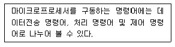
- Move
- Store
- Push
- Add
(정답률: 70%)
91. 전기통신사업자가 법원ㆍ검사ㆍ수사관서의 장, 정보수사기관의 장으로 부터 재판, 수사, 형의집향 또는 국가안전보장에 대한 위해를 방지하기 위한 정보수집을 위하여 자료의 열람이나 제출을 요청 받을 때에 응할 수 있는 대상이 아닌 것은?
- 이용자의 성명과 주민등록번호
- 이용자의 주소와 전화번호
- 이용자의 아이디
- 이용자의 동산 및 부동산
(정답률: 87%)
92. 교환설비 등으로부터 수신된 방송통신콘텐츠를 변환ㆍ재생 또는 증폭하여 유선 또는 무선으로 송신하거나 수신하는 설비로서 전송단국장치ㆍ중계장치ㆍ다중화장치ㆍ분배장치 등과 그 부대설비를 총괄하여 무엇이라 하는가?
- 선로설비
- 전송설비
- 정보통신망
- 전기통신망
(정답률: 58%)
93. 사업용방송통신설비와 이용자방송통신설비의 분계점을 설정하는데 국선과 구내선의 분계점은 어떻게 설정하는가?
- 사업용방송통신설비의 국선수용단자반과 이용자방송통신설비의 단말장치와의 접속되는 점으로 한다.
- 사업용방송통신설비의 국선접속설비와 이용자방송통신설비가 최초로 접속되는 점으로 한다.
- 사업용방송통신설비의 전송설비와 이용자방송통신설비의 구내통신선로설비가 최초로 접속되는 점으로 한다.
- 사업용방송통신설비의 교환설비와 이용자방송통신설비의 최초단자사이에 구성되는 회선으로 한다.
(정답률: 51%)
94. 일반적으로 도로상에 설치되는 가공통신선의 높이는 노면으로부터 얼마 이상으로 설치하는가?
- 2[m]
- 3[m]
- 4.5[m]
- 6.5[m]
(정답률: 72%)
95. 다음 중 공동주택에 홈네트워크를 설치하는 경우 갖추어야 할 홈네트워크장비에 해당하지 않는 것은?
- 집중구내통신실
- 단지네트워크장비
- 폐쇄회로텔레비전장비
- 홈게이트웨이
(정답률: 69%)
96. 다음 중 “지능형 홈네트워크설비 설치 및 기술기준”에 관한 사무를 관장하는 기관이 아닌 곳은?
- 미래창조과학부
- 산업통상자원부
- 국토교통부
- 교육부
(정답률: 75%)
97. 다음 중 방송통신서비스를 제공하는 사업자가 구비하여야 할 안정성과 신뢰성에 해당하는 것으로 관계가 적은 것은?
- 방송통신설비 이용자의 안전 확보에 필요한 사항
- 방송통신설비의 안전성 및 신뢰성 확보를 위하여 필요한 사항
- 방송통신설비의 운용에 필요한 시험ㆍ감시 기능에 관한 사항
- 방송통신설비를 판매하기 위한 건축물의 화재대책 등에 관한 사항
(정답률: 75%)
98. 다음 중 전기통신사업자의 전기통신역무 제공 의무사항이 아닌 것은?
- 전기통신사업자는 정당한 사유 없이 전기통신 역무의 제공을 거부하여서는 아니 된다.
- 전기통신사업자는 그 업무 처리에 있어서 공평하고 신속하며 정확하게 하여야 한다.
- 전기통신역무의 요금은 전기통신역무를 공평하고 저렴하게 제공 받을 수 있도록 합리적으로 결정되어야 한다.
- 기간통신사업자는 전기통신설비 등을 통합 운영하여서는 아니 된다.
(정답률: 74%)
99. 다음 중 정보통신설비 보전을 위한 예비기기 설치 시 고려대상이 아닌 것은?
- 설비의 중요도
- 고장발생률
- 설비의 설치비용
- 복구소요시간
(정답률: 75%)
100. 다음 중 감리원이 공사업자가 설계도서 및 관련 규정의 내용에 적합하지 아니하게 공사를 시공하는 경우 취할 수 있는 조치는 무엇인가?
- 하도급인과 협의하여 설계변경 명령을 할 수 있다.
- 발주자의 동의를 얻어 공사중지 명령을 할 수 있다.
- 수급인에게 보고하고 공사업자가 교체할 수 있다.
- 한국정보통신공사협회에 신고하고 공사업자에 과태료를 부과한다.
(정답률: 77%)